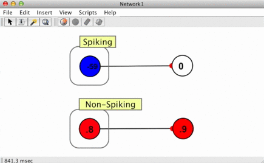

Neurons
Neurons or "nodes" are represented by circles. The numbers inside the neurons corresponds to their "activation level." (What this level represents varies with neuron type: in many cases it can be thought of as representing the rate of a firing of a neuron.) Visibly, these numbers are rounded; functionally, however, double precision floating point values are used. This double-precision value can be seen by lingering over a neuron or double clicking on it.
Neuron Colors
The color of a neuron represents the overall state of the neuron depending upon its update rule. Loosely-speaking neuron models can be broken up into two classes: spiking and non-spiking, and this distinction accounts for many of the differences between the meanings of different colors. In general, blue corresponds to a quiescent or inhibitory state, white corresponds to a 0 or neutral state, and red corresponds to an active or excitatory state. For neuron models which have explicit action potentials (spiking neurons), red indicates the neuron is near its threshold, a yellow flash indicates an action potential. A comparison of the two can be seen in the image to the left.
These color conventions can be customized, as described in the preference dialog. The closeness of the neuron's activation level to the neuron's upper or lower bound is visualized by the intensity of the color.
Neuron Update Rules (or "Neuron Types")
There are a variety of different neuron types in Simbrain, each of which has numerous parameters that can be set. This page addresses properties common to all of the different neuron types. Details on particular neuron types can be found on their respective pages.
Neurons contain a generic set of parameters and utilities common to virtually any model neuron (activation, boundaries, lists of incoming / outgoing synapses, methods to sum synapse strengths, etc.), but themselves have no "type" beyond what is delegated to an update rule. When we speak of a neuron of a given type we are really referring to a neuron which possesses an update rule of that type, since the update rule is what ultimately determines the behavior of the neuron. To the right is a menu of all the different neuron models (neuron update rules), which Simbrain currently possesses out of the box. Editing a neuron allows the user to also edit the properties of its update rule or change the update rule entirely (thereby changing the neuron model).
Neuron Timing Types and the Time Step Field
Different neuron types are updated in different ways. These differences are in various ways reflected in Simbrain:
- Basic Iterative (unmarked in the menu above): standard discrete time update, based on iteration of an algorithm.
- Continuous time (marked with a "δt" in the menu above): update is based on numerical integration of a differential equation. Such neurons (or synapses) do not just respond to external inputs but have internal dynamics and an internal state variable that is updated at each time step. Neurons that are continuous have a time-step field, described below.
- Spiking (marked with an "s" in the menu above): these neurons have activations but also produce spikes. See spiking neurons.
Consider two neuron models: The first performs a weighted sum on the incoming synaptic connections, puts that value through some function which takes in only that net input as an argument, and produces an output. The second performs a weighted sum as well, but this time, the function takes in not only this net input value, but also the "state" (be it the previous net input, activation, or some other value) of the neuron as well. Thus its activation is based not only on its input but its own previous history. In this way we can say that the 2nd neuron has its own internal dynamics. In the first case, the unit of time in the simulation has little or no importance. The activation does not unfold through time and is only dependent on external input to the neuron, thus the question of granularity is irrelevant. This neuron takes in an input and produces an output in a step by step manner. These two cases can be referred to as temporally "discrete" or "continuous" respectively.
Practically speaking even the continuous case is technically discrete as we chose some level of temporal granularity. This is a necessity of simulating temporally continuous situations on a computer which can only consider discrete states. The practice of simulating continuous time on a discrete machine is a major topic in numerical analysis and far beyond the scope of this documentation. The important point is that in complex neuron models with internal states the notion of when things happen and how long they take to happen becomes important, and we simulate that fundamental temporal continuity by choosing typically very small (but meaningful and quantified) discretized time-steps.
Time Step: The time step is a global variable that is used whenever differential equations are numerically integrated. When a continuous neuron is used, an iteration of the network represents an interval of time whose length equals the time-step. Generally speaking, the smaller the time-step, the more accurate the numerical integration. If there is a single continuous neuron or synapse in a simulation, the network panel will display time in "seconds." Otherwise time is displayed in "iterations."
Quick Keyboard Adjustment of Neuron Properties
By selecting a neuron or set of neurons and pressing certain buttons, those neuron's properties can quickly be adjusted. This can be done while a network is running and can be useful for exploring a networks' properties.
Increment / Decrement: Press the up and down buttons to adjust neuron activations. If the up key is pressed, the increment amount of a given neuron is added to the current activation, without regard to bounds or the nature of the neuron's update rule.
Contextual Increment / Decrement: Press the up and down buttons with the option or alt key pressed. This adjusts the neuron's activation in a way that respects the parameters and boundaries of the update rules. Note that contextual increment / decrement is not implemented for all neuron types.
Randomize: Press the "r" key or the "dice" button on the toolbar to randomize all selected neurons. How randomization is done varies by neuron type.
Clear: Press the "c" key or the "eraser" button on the toolbar to set the activations of all selected neurons to 0.
Neuron Dialog / Editing Neurons
More detailed adjustments parameters can be adjusted using the neuron dialog. The dialog contains several sections, including a section for adjusting common neuron properties, described below, and a section specific to the neuron update rule (these parameters are discussed in the relevant sub-pages).

The neuron dialog can be invoked in the following ways:
Setting single neurons: Double click on a neuron or right click on it and select set properties.
Setting multiple neurons: Select more than one neuron, and either double click on one of the neurons, select set properties from the popup or network menu, or use press command-E. A multiple neuron dialog box will appear. If the selected neurons are of different types, only the common properties appear. Otherwise all properties appear. Consistent properties are shown, inconsistent properties are marked by a null string: ". . ." Changes you make will apply to all selected neurons.
Activation: The current level of activity of this neuron. How this should be interpreted is dependent on the neuron type and application (e.g. firing rate, voltage potential, etc.). This is represented by the neuron's color, and can be seen exactly by lingering over the neuron or observing the value in the neuron's properties.
Label: Label neuron with a name.
Clamped: See below.
Clipping: If a neuron uses clipping, then if its activation exceeds its upper or lower bound, the activation is set to the upper or lower bound that it exceeds. Similarly with weights and their strength.
Upper bound: This field plays different roles depending on the type of the neuron (documented accordingly) but in general it determines the maximum level of activity of a node. It also determines what the most "active" color possible for the neuron is. The upper and lower bound also determine the bounds of randomization.
Lower bound: This field plays different roles depending on the type of the neuron but in general it determines the minimum level of activity of a node. It also determines the "least active" color for a neuron.
Priority: The priority of a given neuron, used in priority based update. Lower numbers correspond to higher priority (think of first priority, second priority, etc.), and will be updated first when the network's update method is set to priority based update. Priorities can be viewed in the GUI using the view menu.
Increment: This sets the amount that a neuron is incremented when it is manually adjusted. For example, if increment is set to .1, then each time the up arrow is pressed the neuron will increase its activation by .1. This feature does not affect the neuron while the network is being iterated.
Input Type: This field sets the input type as weighted or synaptic.
In general, a clamped neuron will not change over time; it is "clamped" to its current value. The clamped neuron does not consult its update rule in order to update it's activation. It sits on whatever value it's had. It holds on to current activation. Note: However the clamped neurons values can still be changed by external sources. Manually pressing the up and down buttons will force them to change. Also, testing input tables, used in many subnetworks, can modify clamped neurons. The clamp neurons button  in neuron group clamps all the neurons in that group.
in neuron group clamps all the neurons in that group.
Input Type
A major component of a neuron's behavior is how it goes about interpreting its inputs. In Simbrain there are two different ways a neuron can sum up its inputs: a Weighted Sum or a Synaptic Sum. Loosely these correspond to non-spiking and spiking neurons respectively, but there are some cases where it is useful for a non-spiking neuron to interpret its inputs as synaptic input and vice versa with spiking neurons.
Weighted
This is the simplest and most common way of determining input for most ANNs. As its name suggests it is a weighted sum over the neuron's incoming synapses. The influence of a pre-synaptic neuron on a post synaptic neuron is then dependent on two values: 1) the activation value of the pre-synaptic neuron and 2) the weight or "strength" of the synapse connecting the pre-synaptic neuron to the post-synaptic neuron. The total influence of a given pre-synaptic neuron is represented by the product of its activation and the strength of the connecting synapse.
We represent the weight of the jth input where j ∈ {1, 2, ... , N} for N inputs to neuron i by wij and the steady activation level from the jth node by aj. The weighted input is then:
Where $f$ represents the function neuron i's update rule applies to its inputs, and neti is the weighted or "net" input to neuron i. Often times the confectionist literature refers to the weighted input to a neuron as its net input.
Note that a sensory input term I is also added to the weighted input if the node has a sensory coupling attached to it.
Tip: To make a neuron whose activation value equals its weighted input, use a linear neuron with slope = 1 and bias = 0. Linear neurons are great for quickly displaying unfiltered values.
Synaptic
Synaptic inputs are a bit more complicated than weighted inputs as they attempt to capture some of the dynamics of real synapses in the brain. This type of input is meant specifically for translating action potentials (spikes) created when spiking neurons fire into a continuous value which can be interpreted by other neurons. (So this input type is not meaningful if the pre-synaptic neuron does not produce action potentials). Synaptic inputs perform a weighted sum over the post-synaptic responses of the incoming synapses, which are themselves governed by spike responders. More details can be found in the spike responder and spiking neuron documentation pages. The basic idea is that spikes are modeled as being instantaneous in time and spike responders generate a continuous value from this instantaneous one, for example producing a decaying stream of input to the post-synaptic neuron after a spike (as in the animated image above).
Popup Menu (Selected Neurons)
When right clicking on a neuron a popup-menu appears whose actions will usually apply to selected neurons. Most of these actions are described in the menu documentation. The following actions only appear in the popup menu:
Send Scalar Coupling To: Create a coupling from selected source nodes' activation to a target consumer.
Receive Scalar Coupling From: Create a coupling from a target producer elsewhere in Simbrain to the selected node, which treats them as an external input to the neuron.